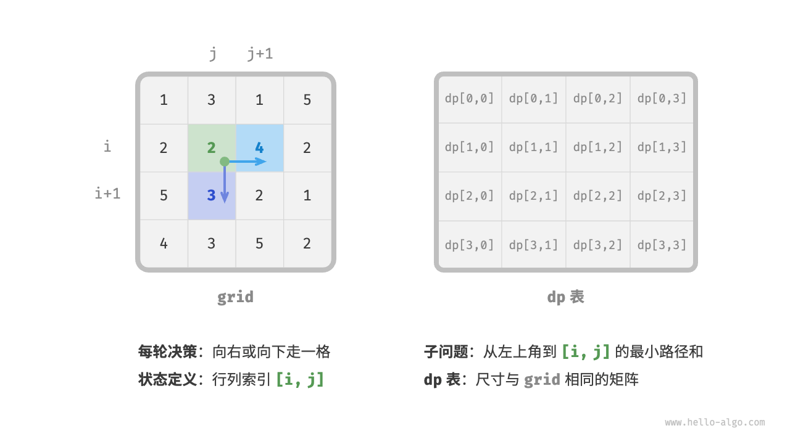
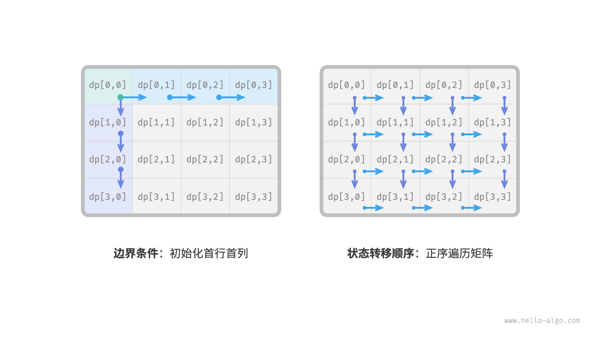
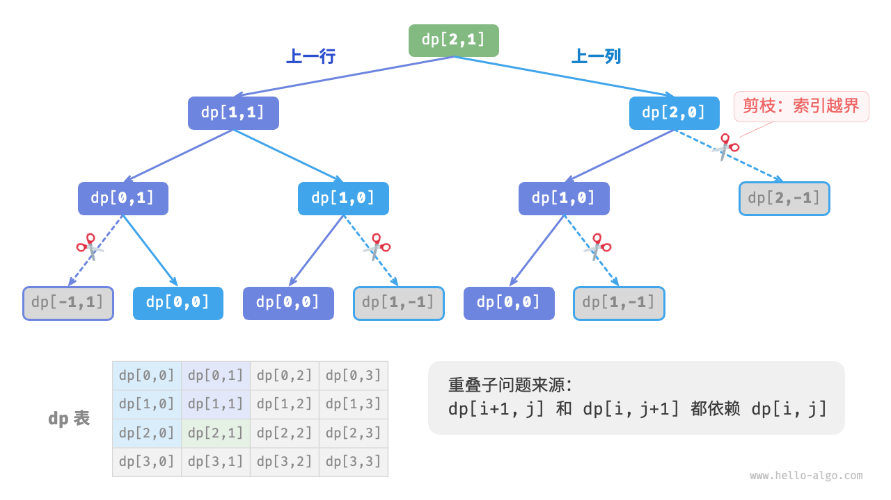

动态规划解题思路
上两节介绍了动态规划问题的主要特征，接下来我们一起探究两个更加实用的问题。
- 如何判断一个问题是不是动态规划问题？
- 求解动态规划问题该从何处入手，完整步骤是什么？
问题判断
总的来说，如果一个问题包含重叠子问题、最优子结构，并满足无后效性，那么它通常适合用动态规划求解。然而，我们很难从问题描述中直接提取出这些特性。因此我们通常会放宽条件，先观察问题是否适合使用回溯（穷举）解决。
适合用回溯解决的问题通常满足“决策树模型”，这种问题可以使用树形结构来描述，其中每一个节点代表一个决策，每一条路径代表一个决策序列。
换句话说，如果问题包含明确的决策概念，并且解是通过一系列决策产生的，那么它就满足决策树模型，通常可以使用回溯来解决。
在此基础上，动态规划问题还有一些判断的“加分项”。
- 问题包含最大（小）或最多（少）等最优化描述。
- 问题的状态能够使用一个列表、多维矩阵或树来表示，并且一个状态与其周围的状态存在递推关系。
相应地，也存在一些“减分项”。
- 问题的目标是找出所有可能的解决方案，而不是找出最优解。
- 问题描述中有明显的排列组合的特征，需要返回具体的多个方案。
如果一个问题满足决策树模型，并具有较为明显的“加分项”，我们就可以假设它是一个动态规划问题，并在求解过程中验证它。
问题求解步骤
动态规划的解题流程会因问题的性质和难度而有所不同，但通常遵循以下步骤：描述决策，定义状态，建立 $dp$ 表，推导状态转移方程，确定边界条件等。
为了更形象地展示解题步骤，我们使用一个经典问题“最小路径和”来举例。
!!! question
给定一个 $n \times m$ 的二维网格 `grid` ，网格中的每个单元格包含一个非负整数，表示该单元格的代价。机器人以左上角单元格为起始点，每次只能向下或者向右移动一步，直至到达右下角单元格。请返回从左上角到右下角的最小路径和。
下图展示了一个例子，给定网格的最小路径和为 $13$ 。

第一步：思考每轮的决策，定义状态，从而得到 $dp$ 表
本题的每一轮的决策就是从当前格子向下或向右走一步。设当前格子的行列索引为 $[i, j]$ ，则向下或向右走一步后，索引变为 $[i+1, j]$ 或 $[i, j+1]$ 。因此，状态应包含行索引和列索引两个变量，记为 $[i, j]$ 。
状态 $[i, j]$ 对应的子问题为：从起始点 $[0, 0]$ 走到 $[i, j]$ 的最小路径和，解记为 $dp[i, j]$ 。
至此，我们就得到了下图所示的二维 $dp$ 矩阵，其尺寸与输入网格 $grid$ 相同。

!!! note
动态规划和回溯过程可以描述为一个决策序列，而状态由所有决策变量构成。它应当包含描述解题进度的所有变量，其包含了足够的信息，能够用来推导出下一个状态。
每个状态都对应一个子问题，我们会定义一个 $dp$ 表来存储所有子问题的解，状态的每个独立变量都是 $dp$ 表的一个维度。从本质上看，$dp$ 表是状态和子问题的解之间的映射。
第二步：找出最优子结构，进而推导出状态转移方程
对于状态 $[i, j]$ ，它只能从上边格子 $[i-1, j]$ 和左边格子 $[i, j-1]$ 转移而来。因此最优子结构为：到达 $[i, j]$ 的最小路径和由 $[i, j-1]$ 的最小路径和与 $[i-1, j]$ 的最小路径和中较小的那一个决定。
根据以上分析，可推出下图所示的状态转移方程：
$$ dp[i, j] = \min(dp[i-1, j], dp[i, j-1]) + grid[i, j]
$$

!!! note
根据定义好的 $dp$ 表，思考原问题和子问题的关系，找出通过子问题的最优解来构造原问题的最优解的方法，即最优子结构。
一旦我们找到了最优子结构，就可以使用它来构建出状态转移方程。
第三步：确定边界条件和状态转移顺序
在本题中，处在首行的状态只能从其左边的状态得来，处在首列的状态只能从其上边的状态得来，因此首行 $i = 0$ 和首列 $j = 0$ 是边界条件。
如下图所示，由于每个格子是由其左方格子和上方格子转移而来，因此我们使用循环来遍历矩阵，外循环遍历各行，内循环遍历各列。

!!! note
边界条件在动态规划中用于初始化 $dp$ 表，在搜索中用于剪枝。
状态转移顺序的核心是要保证在计算当前问题的解时，所有它依赖的更小子问题的解都已经被正确地计算出来。
根据以上分析，我们已经可以直接写出动态规划代码。然而子问题分解是一种从顶至底的思想，因此按照“暴力搜索 $\rightarrow$ 记忆化搜索 $\rightarrow$ 动态规划”的顺序实现更加符合思维习惯。
方法一：暴力搜索
从状态 $[i, j]$ 开始搜索，不断分解为更小的状态 $[i-1, j]$ 和 $[i, j-1]$ ，递归函数包括以下要素。
- 递归参数：状态 $[i, j]$ 。
- 返回值：从 $[0, 0]$ 到 $[i, j]$ 的最小路径和 $dp[i, j]$ 。
- 终止条件：当 $i = 0$ 且 $j = 0$ 时，返回代价 $grid[0, 0]$ 。
- 剪枝：当 $i < 0$ 时或 $j < 0$ 时索引越界，此时返回代价 $+\infty$ ，代表不可行。
实现代码如下：
"Python"
def min_path_sum_dfs(grid: list[list[int]], i: int, j: int) -> int: """最小路径和：暴力搜索""" // 若为左上角单元格，则终止搜索 if i == 0 and j == 0: return grid[0][0] // 若行列索引越界，则返回 +∞ 代价 if i < 0 or j < 0: return inf // 计算从左上角到 (i-1, j) 和 (i, j-1) 的最小路径代价 up = min_path_sum_dfs(grid, i - 1, j) left = min_path_sum_dfs(grid, i, j - 1) // 返回从左上角到 (i, j) 的最小路径代价 return min(left, up) + grid[i][j]"C++"
/* 最小路径和：暴力搜索 */ int minPathSumDFS(vector<vector<int>> &grid, int i, int j) { // 若为左上角单元格，则终止搜索 if (i == 0 && j == 0) { return grid[0][0]; } // 若行列索引越界，则返回 +∞ 代价 if (i < 0 || j < 0) { return INT_MAX; } // 计算从左上角到 (i-1, j) 和 (i, j-1) 的最小路径代价 int up = minPathSumDFS(grid, i - 1, j); int left = minPathSumDFS(grid, i, j - 1); // 返回从左上角到 (i, j) 的最小路径代价 return min(left, up) != INT_MAX ? min(left, up) + grid[i][j] : INT_MAX; }"Java"
/* 最小路径和：暴力搜索 */ int minPathSumDFS(int[][] grid, int i, int j) { // 若为左上角单元格，则终止搜索 if (i == 0 && j == 0) { return grid[0][0]; } // 若行列索引越界，则返回 +∞ 代价 if (i < 0 || j < 0) { return Integer.MAX_VALUE; } // 计算从左上角到 (i-1, j) 和 (i, j-1) 的最小路径代价 int up = minPathSumDFS(grid, i - 1, j); int left = minPathSumDFS(grid, i, j - 1); // 返回从左上角到 (i, j) 的最小路径代价 return Math.min(left, up) + grid[i][j]; }
下图给出了以 $dp[2, 1]$ 为根节点的递归树，其中包含一些重叠子问题，其数量会随着网格 grid 的尺寸变大而急剧增多。
从本质上看，造成重叠子问题的原因为：存在多条路径可以从左上角到达某一单元格。

每个状态都有向下和向右两种选择，从左上角走到右下角总共需要 $m + n - 2$ 步，所以最差时间复杂度为 $O(2^{m + n})$ 。请注意，这种计算方式未考虑临近网格边界的情况，当到达网络边界时只剩下一种选择，因此实际的路径数量会少一些。
方法二：记忆化搜索
我们引入一个和网格 grid 相同尺寸的记忆列表 mem ，用于记录各个子问题的解，并将重叠子问题进行剪枝：
"Python"
def min_path_sum_dfs_mem( grid: list[list[int]], mem: list[list[int]], i: int, j: int ) -> int: """最小路径和：记忆化搜索""" // 若为左上角单元格，则终止搜索 if i == 0 and j == 0: return grid[0][0] // 若行列索引越界，则返回 +∞ 代价 if i < 0 or j < 0: return inf // 若已有记录，则直接返回 if mem[i][j] != -1: return mem[i][j] // 左边和上边单元格的最小路径代价 up = min_path_sum_dfs_mem(grid, mem, i - 1, j) left = min_path_sum_dfs_mem(grid, mem, i, j - 1) // 记录并返回左上角到 (i, j) 的最小路径代价 mem[i][j] = min(left, up) + grid[i][j] return mem[i][j]"C++"
/* 最小路径和：记忆化搜索 */ int minPathSumDFSMem(vector<vector<int>> &grid, vector<vector<int>> &mem, int i, int j) { // 若为左上角单元格，则终止搜索 if (i == 0 && j == 0) { return grid[0][0]; } // 若行列索引越界，则返回 +∞ 代价 if (i < 0 || j < 0) { return INT_MAX; } // 若已有记录，则直接返回 if (mem[i][j] != -1) { return mem[i][j]; } // 左边和上边单元格的最小路径代价 int up = minPathSumDFSMem(grid, mem, i - 1, j); int left = minPathSumDFSMem(grid, mem, i, j - 1); // 记录并返回左上角到 (i, j) 的最小路径代价 mem[i][j] = min(left, up) != INT_MAX ? min(left, up) + grid[i][j] : INT_MAX; return mem[i][j]; }"Java"
/* 最小路径和：记忆化搜索 */ int minPathSumDFSMem(int[][] grid, int[][] mem, int i, int j) { // 若为左上角单元格，则终止搜索 if (i == 0 && j == 0) { return grid[0][0]; } // 若行列索引越界，则返回 +∞ 代价 if (i < 0 || j < 0) { return Integer.MAX_VALUE; } // 若已有记录，则直接返回 if (mem[i][j] != -1) { return mem[i][j]; } // 左边和上边单元格的最小路径代价 int up = minPathSumDFSMem(grid, mem, i - 1, j); int left = minPathSumDFSMem(grid, mem, i, j - 1); // 记录并返回左上角到 (i, j) 的最小路径代价 mem[i][j] = Math.min(left, up) + grid[i][j]; return mem[i][j]; }
如下图所示，在引入记忆化后，所有子问题的解只需计算一次，因此时间复杂度取决于状态总数，即网格尺寸 $O(nm)$ 。
方法三：动态规划
基于迭代实现动态规划解法，代码如下所示：
"Python"
def min_path_sum_dp(grid: list[list[int]]) -> int: """最小路径和：动态规划""" n, m = len(grid), len(grid[0]) // 初始化 dp 表 dp = [[0] * m for _ in range(n)] dp[0][0] = grid[0][0] // 状态转移：首行 for j in range(1, m): dp[0][j] = dp[0][j - 1] + grid[0][j] // 状态转移：首列 for i in range(1, n): dp[i][0] = dp[i - 1][0] + grid[i][0] // 状态转移：其余行和列 for i in range(1, n): for j in range(1, m): dp[i][j] = min(dp[i][j - 1], dp[i - 1][j]) + grid[i][j] return dp[n - 1][m - 1]"C++"
/* 最小路径和：动态规划 */ int minPathSumDP(vector<vector<int>> &grid) { int n = grid.size(), m = grid[0].size(); // 初始化 dp 表 vector<vector<int>> dp(n, vector<int>(m)); dp[0][0] = grid[0][0]; // 状态转移：首行 for (int j = 1; j < m; j++) { dp[0][j] = dp[0][j - 1] + grid[0][j]; } // 状态转移：首列 for (int i = 1; i < n; i++) { dp[i][0] = dp[i - 1][0] + grid[i][0]; } // 状态转移：其余行和列 for (int i = 1; i < n; i++) { for (int j = 1; j < m; j++) { dp[i][j] = min(dp[i][j - 1], dp[i - 1][j]) + grid[i][j]; } } return dp[n - 1][m - 1]; }"Java"
/* 最小路径和：动态规划 */ int minPathSumDP(int[][] grid) { int n = grid.length, m = grid[0].length; // 初始化 dp 表 int[][] dp = new int[n][m]; dp[0][0] = grid[0][0]; // 状态转移：首行 for (int j = 1; j < m; j++) { dp[0][j] = dp[0][j - 1] + grid[0][j]; } // 状态转移：首列 for (int i = 1; i < n; i++) { dp[i][0] = dp[i - 1][0] + grid[i][0]; } // 状态转移：其余行和列 for (int i = 1; i < n; i++) { for (int j = 1; j < m; j++) { dp[i][j] = Math.min(dp[i][j - 1], dp[i - 1][j]) + grid[i][j]; } } return dp[n - 1][m - 1]; }
下图展示了最小路径和的状态转移过程，其遍历了整个网格，因此时间复杂度为 $O(nm)$ 。
数组 dp 大小为 $n \times m$ ，因此空间复杂度为 $O(nm)$ 。
"<1>"
"<2>"
"<3>"
"<4>"
"<5>"
"<6>"
"<7>"
"<8>"
"<9>"
"<10>"

"<11>"
"<12>"
空间优化
由于每个格子只与其左边和上边的格子有关，因此我们可以只用一个单行数组来实现 $dp$ 表。
请注意，因为数组 dp 只能表示一行的状态，所以我们无法提前初始化首列状态，而是在遍历每行时更新它：
"Python"
def min_path_sum_dp_comp(grid: list[list[int]]) -> int: """最小路径和：空间优化后的动态规划""" n, m = len(grid), len(grid[0]) // 初始化 dp 表 dp = [0] * m // 状态转移：首行 dp[0] = grid[0][0] for j in range(1, m): dp[j] = dp[j - 1] + grid[0][j] // 状态转移：其余行 for i in range(1, n): // 状态转移：首列 dp[0] = dp[0] + grid[i][0] // 状态转移：其余列 for j in range(1, m): dp[j] = min(dp[j - 1], dp[j]) + grid[i][j] return dp[m - 1]"C++"
/* 最小路径和：空间优化后的动态规划 */ int minPathSumDPComp(vector<vector<int>> &grid) { int n = grid.size(), m = grid[0].size(); // 初始化 dp 表 vector<int> dp(m); // 状态转移：首行 dp[0] = grid[0][0]; for (int j = 1; j < m; j++) { dp[j] = dp[j - 1] + grid[0][j]; } // 状态转移：其余行 for (int i = 1; i < n; i++) { // 状态转移：首列 dp[0] = dp[0] + grid[i][0]; // 状态转移：其余列 for (int j = 1; j < m; j++) { dp[j] = min(dp[j - 1], dp[j]) + grid[i][j]; } } return dp[m - 1]; }"Java"
/* 最小路径和：空间优化后的动态规划 */ int minPathSumDPComp(int[][] grid) { int n = grid.length, m = grid[0].length; // 初始化 dp 表 int[] dp = new int[m]; // 状态转移：首行 dp[0] = grid[0][0]; for (int j = 1; j < m; j++) { dp[j] = dp[j - 1] + grid[0][j]; } // 状态转移：其余行 for (int i = 1; i < n; i++) { // 状态转移：首列 dp[0] = dp[0] + grid[i][0]; // 状态转移：其余列 for (int j = 1; j < m; j++) { dp[j] = Math.min(dp[j - 1], dp[j]) + grid[i][j]; } } return dp[m - 1]; }